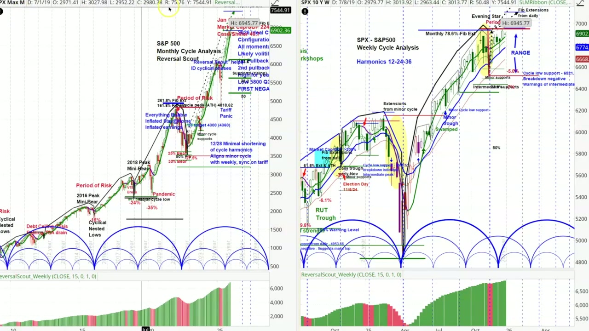
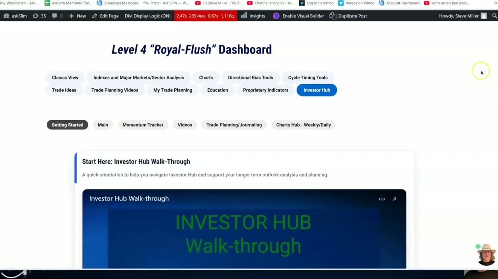
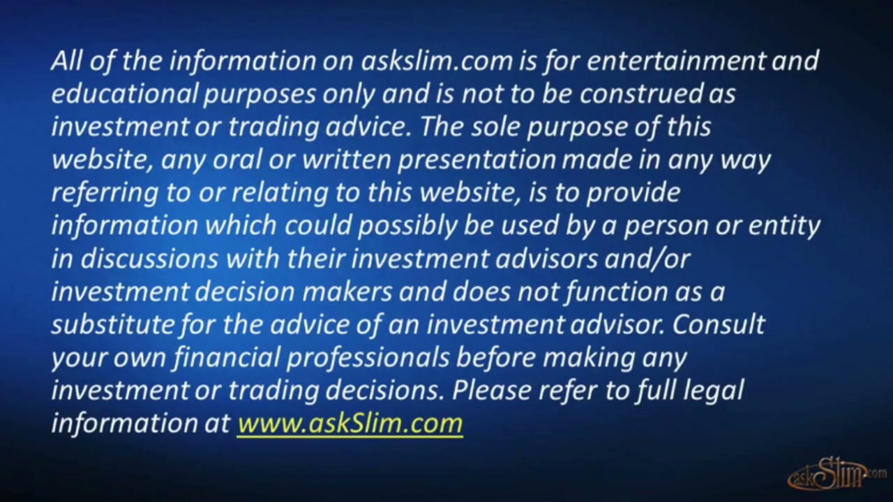

이제 모든 31개 세그먼트의 스크린샷을 확인했습니다. 자막이 없는 상태에서 스크린샷의 시각적 정보만으로 최대한 상세한 분석 보고서를 작성하겠습니다.
채널: Steve Miller (askSlim) | 길이: 37:03 | 날짜: 2026년 2월 1일 업로드 (분석 기준일: 2025년 12월 31일)
핵심 내용
- S&P 500은 2023~2025년 3년간 복합 수익률 약 86.7%를 기록하며, 1926년 이후 모든 3년 구간 중 상위 10%에 해당하는 역사적으로 희귀한 강세장을 경험했다. 이보다 더 강했던 현대 구간은 1997~1999년 닷컴 멜트업과 2019~2021년 팬데믹 유동성 슈퍼사이클 두 차례뿐이며, 이러한 극단적 상승 이후에는 항상 높은 변동성과 약한 수익률이 뒤따랐다.
- 밸류에이션이 근대 역사상 최고 수준에 도달했다. 버핏 지표(시가총액/GDP 비율)가 약 224%로, 닷컴 피크(~157%)와 2021년 "에브리씽 버블"(~207%)을 모두 초과한 수준이다. Case/Shiller P/E도 40.7로 극도로 높은 상태이며, 이는 역사적으로 향후 10년간 실질 수익률이 0~3% 또는 마이너스에 그칠 것을 시사한다.
- 2026년 SPX 이상적 사이클 페이징에 따르면, 연초 모멘텀은 긍정적이나 변동성이 큰 한 해가 될 전망이다. 1차 풀백은 3~4월(주간 저점), 2차 풀백은 5~6월(주간 저점)에 예상되며, 연고점은 Q1 또는 Q2에 7,300~7,450 수준에서 형성될 것으로 보인다. 연저점은 Q3~Q4에 5,800(고점 대비 약 21% 하락)까지 떨어질 수 있으며, 이때 첫 번째 네거티브 주간 사이클이 피크를 설정할 것이다.
- 나스닥(NDX)은 사이클 피크 영역에 진입해 있으며, Russell 2000(RUT)은 다른 지수 대비 상대적으로 약세를 보이고 있다. RUT의 2025년 초기 상방 목표는 2,470~2,565였으며, 시장이 새로운 고점을 향하려면 이 지수가 시장 폭(breadth) 확장을 선도해야 한다는 핵심 조건이 제시된다.
- VIX 사이클 패턴은 1986년 이래 일관되게 유지되고 있으며, 분기별/월별 오버레이 분석에서 현재 변동성이 주요 위기 구간의 사이클 저점에서 반등하는 패턴과 일치한다. 1987년 블랙먼데이, 1998년 LTCM, 2000~2002년 약세장, 2008~2009년 금융위기, 2020년 팬데믹, 그리고 2025년 관세 패닉(Tariff Panic)이 모두 사이클 구조 내에서 발생했음을 보여준다.
상세 분석
1. 오프닝 — 발표 개요 및 기준일
영상은 "askSlim"이라는 브랜드 로고가 좌하단에 표시된 프레젠테이션 형식으로 시작된다. 화면 중앙에 큰 녹색 글씨로 "Big Picture Analysis", 그 아래 "2026 Projections", "US Stock Market"이 표시되어 있다. 기준일은 December 31, 2025로, 2025년 말 시점의 데이터를 바탕으로 2026년을 전망하는 연례 분석임을 알 수 있다. 우하단에는 발표자 Steve Miller의 얼굴이 웹캠으로 표시되어 있으며, 특유의 파나마 모자를 쓴 모습이다.
2. Slim's Take — 3년간의 희귀한 상승: "Three Years of Rare Air"
이 슬라이드는 "THE RUN: THREE YEARS OF RARE AIR"라는 제목 아래 두 개의 핵심 데이터 블록으로 구성되어 있다.
좌측: 3년 수익률 순위 (2023~2025)
- S&P 500 총수익률:
- 2023년: +26.29%
- 2024년: +25.02%
- 2025년: +19.32%
- 복합 3년 수익률: 약 86.7%
- 이는 1926년 이후 모든 3년 구간 중 상위 10%에 해당
- 이보다 강했던 현대 구간은 단 두 차례:
- 1997~1999년 (닷컴 멜트업)
- 2019~2021년 (팬데믹 유동성 슈퍼사이클)
우측: 밸류에이션 순위 — 근대 역사상 최고
- 버핏 지표(Buffett Indicator)가 현재 약 224%
- 이는 다음 수준을 초과:
- 닷컴 피크: 약 157%
- 2021년 "에브리씽 버블": 약 207%
- 핵심 맥락: 이전의 어떤 고수익 구간도 이 정도로 극단적인 밸류에이션에서 발생하지 않았다
역사적 비교:
- 1970년대에 Nifty Fifty는 "원-디시전 스톡(one-decision stocks)"으로 취급되었다. 오늘날 AI 메가캡들이 그 역할을 하고 있다 — 지배적이고, 사랑받고, 완벽함에 가격이 매겨진 상태.
- Nifty Fifty 피크 시 밸류에이션은 약 120%에서 정점을 찍었는데, 이는 오늘날의 약 224%의 절반 수준이다.
- 그 이후 10년간 제로 수익률이 뒤따랐다.
3. The Consequence — 역사가 말하는 다음 시나리오
"THE CONSEQUENCE: WHAT HISTORY SAYS NEXT" 슬라이드는 극단적 밸류에이션 이후 어떤 일이 벌어지는지를 역사적 데이터로 설명한다.
극단적 밸류에이션이 역사적으로 함의하는 것:
- 밸류에이션이 상위 10분위(top decile)에 있을 때, 향후 10년 실질 수익률은 평균 연 0~3%
- 밸류에이션이 사상 최고치를 경신할 때, 향후 수익률은 종종 실질 0% 미만으로 하락
강력한 다년간 상승 + 기록적 밸류에이션의 조합:
- 이 조합이 또 다른 10년의 강세장으로 이어진 적은 거의 없다
- CAPE 모델: 현재 밸류에이션에서 향후 10년 실질 수익률은 낮은 한 자릿수
- GuruFocus 모델 (2025년 12월): 향후 10년간 연환산 -0.6% 수익률 예상
Slim Take — 핵심 결론:
"우리는 역사상 가장 강력한 3년 상승 중 하나를 경험했다 — 역사상 가장 높은 밸류에이션에서. 역사는 이런 조합이 조용히 끝나는 일이 거의 없다고 말한다 — 향후 1~2년간 높은 변동성의 위험을 높이고, 그 이후 10년간 약한 수익률이 이어진다."
4. 2026 Projections 전환 — SPX, NDX, RUT, VIX
이 전환 슬라이드는 본격적인 기술적 분석 섹션으로의 이행을 보여준다. "Big Picture Analysis / 2026 Projections / SPX – NDX – RUT - VIX" 네 가지 주요 지수/지표에 대한 분석이 이어질 것임을 예고한다. 기준일은 동일하게 December 31, 2025이다.
5. S&P 500 월간 사이클 분석 — Reversal Scout (전체 개관)

SPX 월간 및 주간 사이클 이중 차트
이 스크린샷은 화면을 좌우로 나눈 이중 차트를 보여준다.
좌측: S&P 500 Monthly Cycle Analysis (Reversal Scout)
- 2016년부터 현재까지의 월간 캔들 차트에 사이클 곡선(파란색 반원 형태)이 오버레이되어 있다.
- 주요 표기 사항:
- 2016 Peak / Mini-Bear: 2016년 초 미니 베어 마켓 저점
- 2018 Peak / Mini-Bear: 2018년 말 -24% 하락
- Pandemic: 2020년 -35% 하락
- Everything Bubble / Inflated Stay@Home / Inflated earnings: 2021년 고점 영역
- Period of Risk: 2022년 하락 구간 (사이클 피크 ATH 4818.62)
- '23 target 4300 (4360): 2023년 목표가 달성
- Minor cycle supports: 하단 지지선
- Jan 1, 2026: Market Cap/GDP 224%, Case/Shiller 40.7: 현재 밸류에이션 주석
- Hi: 6945.77 (78.6% Fib Ext): 최고점 피보나치 확장선
- 현재가 약 6902~6903 수준
우측: SPX - S&P500 Weekly Cycle Analysis (Harmonics 12-24-36)
- 주간 캔들 차트에 12주-24주-36주 사이클 하모닉스가 오버레이
- Evening Star: 주간 차트 상에서의 이브닝 스타 패턴(약세 전환 신호)
- Period of Risk: 고점 영역 표시
- RANGE: 최근 가격이 레인지(횡보) 구간에 있음
- Cycle low support - 6521.92: 사이클 저점 지지선
- Breakdown negative / Warnings of intermediate top: 중간파 고점 경고 신호
- RUT Trough: Russell 2000 저점 표시 (11/5/24 선거일)
- Minor trough / Swamped: 부차 저점 및 스웜핑(덮침) 현상
- 하단의 ReversalScout_Weekly 지표 바 차트
6. S&P 500 월간 사이클 — 2026 이상적 사이클 페이징 (확대 분석)
이 확대 차트에서는 2020년부터 2027년까지의 S&P 500 월간 사이클을 더욱 상세히 보여준다.
핵심 데이터 포인트:
- Jan 1, 2026: Market Cap/GDP 224%, Case/Shiller 40.7
- Hi: 6945.77 (78.6% Fib Extension)
- 현재가: 약 6903
2026 Ideal Cycle Phasing (우측 텍스트 박스):
- Configuration positive (구성 긍정적)
- All momentum positive (모든 모멘텀 긍정적)
- Likely volatile year ahead (변동성 높은 한 해 예상)
- 1st Pullback into March-April (Weekly trough) — 첫 번째 풀백: 3~4월 주간 저점
- 2nd pullback into May-June (Weekly trough) — 두 번째 풀백: 5~6월 주간 저점
- High for year 7300-7450 Q1 or Q2 — 연고점: Q1 또는 Q2에 7,300~7,450
- Low 5800 Q3-Q4 (21% from peak) — 연저점: Q3~Q4에 5,800 (고점 대비 21% 하락)
- FIRST NEGATIVE WEEKLY CYCLE SETS PEAK — 첫 번째 네거티브 주간 사이클이 피크 설정
사이클 구조 설명:
- 파란색 반원 곡선들이 월간 사이클의 상승/하강 국면을 나타냄
- 12/28 Minimal shortening of cycle harmonics — 12월 28일에 사이클 하모닉스의 최소 단축이 발생, 마이너 사이클을 주간 사이클과 정렬시킴 (관세 패닉과 동기화)
- Minor 100% Fib Ext: 상단에 피보나치 100% 확장선이 약 7,400~7,500 수준에 표시
- Supports (rising): 상승하는 지지선이 여러 피보나치 레벨(23.6, 38.2, 50)에 녹색 수평선으로 표시
7. S&P 500 월간 사이클 — Q3-Q4 하락 시나리오 설명
이 스크린샷에서는 마우스 커서가 2026년 하반기 사이클 저점 영역을 가리키고 있다. 월간 사이클 곡선이 2026년 후반에 하강 국면으로 접어들면서, Q3~Q4에 5,800까지의 하락 가능성을 시각적으로 보여준다. 사이클 곡선의 하단부(trough)가 약 2026년 10월경에 위치해 있어, 이 시기가 가장 큰 하락 압력이 예상되는 구간임을 나타낸다.
8. S&P 500 월간 사이클 — 2027년 이후 장기 전망
마우스 커서가 2027년 중반~후반 영역을 가리키며, 월간 사이클의 다음 주요 저점(Major cycle low)이 형성될 수 있는 시점을 탐색하고 있다. 2026년의 사이클 저점 이후 반등이 있더라도, 더 큰 사이클 구조에서는 2027년까지 추가적인 하락 위험이 존재할 수 있음을 시사한다.
9. S&P 500 주간 사이클 분석 — 상세 (Harmonics 12-24-36)
주간 차트에서는 더욱 세밀한 사이클 하모닉스 분석이 이루어진다.
주요 기술적 특징:
- SPX - S&P500 Weekly Cycle Analysis / Harmonics 12-24-36: 12주, 24주, 36주 사이클이 오버레이
- Monthly 78.6% Fib Extension: 월간 피보나치 78.6% 확장선이 저항으로 작용
- Evening Star: 고점 부근에서 이브닝 스타 캔들 패턴이 형성되어 약세 전환 경고
- Period of Risk: 현재 고점 영역이 리스크 구간으로 표시 (빨간 텍스트)
- Hi: 6945.77: 사이클 고점
- RANGE: 최근 레인지 바운드 구간 (약 6660~6903)
- Cycle low support - 6521.92: 사이클 저점 지지선
- Breakdown negative / Warnings of intermediate top: 이 지지선 하방 이탈 시 중간파 고점 경고
- -5.0%, -7%: 중간 지지선에서의 하락폭 표시
- Intermediate supports: 중간 지지선
SLM Ribbon 지표: 차트 상단에 SLM Ribbon(CLOSE, 8, 13, 21, 0) 값이 표시 — 6834.55, 6774.3, 6668.23으로, 단기-중기-장기 이동평균이 현재가(6903) 아래에 위치하여 아직은 긍정적 구조.
Fib Extensions from daily: 일간 차트 기준 피보나치 확장선이 추가적인 저항 레벨을 제공
10. S&P 500 주간 사이클 — 2025년 전체 흐름 및 주요 이벤트
이 스크린샷에서는 차트 위에 팝업 메뉴(Edit properties, Activate drawing, Duplicate drawing 등)가 열려 있어 발표자가 차트 도구를 조작하는 모습이 포착되었다. 배경의 차트는 동일한 SPX 주간 사이클 분석을 보여주며, 주요 이벤트 포인트들이 표시되어 있다:
- Election Day 11/5/24: 선거일이 사이클 저점과 일치
- Market Cap 6000 / Fib Extensions from daily / 61.8% Ext & ATH: 피보나치 확장 레벨
- Daily trough: 일간 저점
- Cycle low support - 5636.51 / Breakdown indicates intermediate peak: 사이클 저점 지지선 하방 이탈 시 중간파 고점 확인
- Extensions from minor cycle: 소사이클 확장선
- Minor trough / Swamped: 부차 저점 및 덮침 현상
- Monthly 50%: 월간 50% 레벨
11. S&P 500 주간 사이클 — 과거 사이클 구조 비교 (2024년 이전)
이 스크린샷은 시간축을 왼쪽으로 스크롤하여 2024년 초~중반의 사이클 구조를 보여준다. "Learn cycle analysis / askSlim.com > workshops"라는 교육 안내 문구가 좌측 상단에 표시되어 있다. 사이클 하모닉스의 반복 패턴을 과거 데이터와 비교하면서, 12주-24주-36주 사이클이 어떻게 주요 저점과 고점을 예측하는 데 활용되는지를 시각적으로 설명한다.
주요 관찰 포인트:
- Fib Extensions from daily: 일간 피보나치 확장선이 2024년 상반기 저항으로 작용
- 78.6% repair level: 수리(repair) 레벨
- Period of Risk / March-May: 2024년 3~5월이 리스크 구간이었음
- 13-Week SMA / 34-Week SMA: 13주 및 34주 단순이동평균선이 지지/저항으로 활용
- Supports / 8.0% / 38.2, 50: 피보나치 지지 레벨
12. 나스닥(NDX) 월간 및 주간 사이클 분석
화면이 다시 좌우 이중 차트로 전환되어 나스닥 100(NDX)의 분석을 보여준다.
좌측: NDX Max Monthly Chart
- Hi: 26182.1: 나스닥 100 사상 최고점
- Minor 78.6% Fib Extension: 상단 저항선
- 현재가: 약 25,493.13 (녹색 박스)
- Valuations / Earnings concentration: 밸류에이션과 실적 집중 리스크 표시
- Supports Rising: 상승하는 지지선
- Dom 23.6: 도미넌트 사이클 23.6% 레벨
- Dom 38.2: 도미넌트 사이클 38.2% 레벨 (약 19,785.21)
- Dom 50%: 도미넌트 사이클 50% 레벨
- Minor cycle supports: 소사이클 지지선
- 12/6 Minimal shortening of cycle harmonics / Aligns minor cycle: SPX와 유사하게 사이클 하모닉스 단축 발생
우측: NDX 10Y Weekly Chart
- Hi: 26182.1: 동일한 사상 최고점
- ATH - Cycle peak: 사상 최고치 = 사이클 피크
- Monthly Fib Extension: 월간 피보나치 확장선 (파란색 수평선)
- Period of Risk: 고점 영역 리스크 표시
- Minor Supports / 23.6%: 소사이클 지지
- Minor trough: 부차 저점 (2025년 중반)
- 34-Week SMA: 34주 이동평균선이 핵심 지지로 작용
- 78.6% Repair Level: 수리 레벨
- 하단 ReversalScout 바 차트에서 현재 모멘텀 상태 확인
13. 나스닥(NDX) 주간 사이클 — 확대 분석
NDX 주간 차트의 확대 분석에서는 2024년부터 2026년 초까지의 세밀한 사이클 구조를 보여준다.
주요 표기 사항:
- NDX - NASDAQ Weekly cycle analysis
- ATH - Cycle peak: 사이클 피크가 사상 최고치와 일치
- Monthly Fib Extension: 월간 피보나치 확장선이 약 25,080~25,493 수준에서 저항
- Fib Extension - monthly: 월간 피보나치 확장선 (좌측 파란색 하이라이트 영역)
- Fib extensions from daily chart: 일간 차트 기준 피보나치 확장
- 78.6% repair level: 수리 레벨
- Period of Risk / March - May: 리스크 구간 표시
- Minor trough: 2025년 봄에 형성된 부차 저점
- Unreadable trough / Right hand translation / Swamping: 판독 불가능한 저점, 우측 이동(right hand translation), 스웜핑 현상
- RUT trough: Russell 2000 저점과의 비교
- Minor trough: 추가 부차 저점
- Cycle low support / Breakdown negative: 사이클 저점 지지선 및 하방 이탈 시 부정 신호
- Minor supports / 78.6% Warning Level: 경고 수준의 지지선
- Support zones: 최하단 지지 영역
- Monthly 50%: 월간 50% 레벨
- 5/1 Early Trough: 5월 1일 조기 저점
- 34-Week SMA: 34주 이동평균선
현재가가 사이클 피크 영역(Period of Risk)에 위치하고 있어, 단기적으로 조정 가능성이 높은 것으로 분석된다. 월간 피보나치 확장선(약 26,057)이 상단 커서에 표시되어 있어, 이 수준까지의 추가 상승 가능성도 열려 있지만 리스크가 매우 높다.
14. Russell 2000(RUT) 월간 및 주간 사이클 분석
Russell 2000 소형주 지수에 대한 분석은 다른 지수와 비교하여 상대적 약세를 강조한다.
좌측: RUT Monthly Chart
- Hi: 2595.98: 사상 최고점
- 현재가: 약 2505.33 (녹색 박스)
- All-Time High: 빨간 수평선으로 표시
- 피보나치 확장 레벨:
- Dom 50% Ext
- Dom 61.8% Ext
- Dom 78.6% Ext
- Minor 78.6% Ext
- Minor 100% Ext
- Minor 127.2% Ext
- 지지선:
- Supports Rising: 상승하는 지지선 (23.6, 38.2, 50, 61.8 레벨)
- 61.8% Fib / 78.6% Fib: 중간 지지
- 30% Bear / 35% Bear: 약세장 수준의 하락 시 지지선 (약 1,800~1,600 영역)
- Major 50% Fib / Major 61.8% Fib: 장기 지지선
텍스트 주석 (좌측 하단):
"2025 early upside projection 2470 to 2565, then retracement into midyear. Weaker than other indexes. If stock market is going to new highs, this index will need to lead breadth expansion."
이 메모는 핵심적이다 — RUT의 2025년 초기 상방 목표는 2,470~2,565였으며, 이후 연중 되돌림이 예상되었다. 다른 지수 대비 약세이며, 시장이 새로운 고점을 향하려면 이 지수가 시장 폭(breadth) 확장을 선도해야 한다는 조건이 붙는다.
우측: RUT Russell 2000 Weekly Chart
- Period of Risk: 고점 영역 리스크 표시
- Hi: 2595.98: 동일한 고점
- Projections negative: 전망 부정적
- Cycle configurations and momentum negative in all time frames: 모든 시간 프레임에서 사이클 구성 및 모멘텀이 부정적
- Momentum Positive: 일부 구간에서 모멘텀이 긍정적으로 전환되는 지점 표시
- Supports (rising): 상승 지지선
- Minor Supports / 38.2: 소사이클 지지
- Dominant 78.6% Repair Level: 도미넌트 사이클 78.6% 수리 레벨
- 34-Week SMA: 34주 이동평균선이 핵심 지지로 작용
- 12/28 Harmonics Minimally reduced: 하모닉스가 최소 수준으로 축소
- Cycle Trough / Downside panic: 사이클 저점 및 하방 패닉
- Major low: 장기 주요 저점
RUT의 주간 차트에서 특히 주목할 점은 "Projections negative / Cycle configurations and momentum negative in all time frames"라는 경고로, 이는 소형주 시장이 구조적으로 약세 국면에 있음을 나타낸다.
15. VIX 분기별 사이클 분석 — 1986년 이래의 일관된 패턴
이 섹션에서는 CBOE 변동성 지수(VIX)의 장기 분기별 사이클 패턴을 분석한다.
차트 상단 정보:
- VIX / CBOE MARKET VOLATILITY / MKT VLTLITY: VIX 지수 14.22
- MovAvgTwoLines(CLOSE, 13, 34, 0, SIMPLE): 13기간 및 34기간 이동평균선
- shared_askSlim_Momentum2(CLOSE, 15, 0): 독자 모멘텀 지표
VIX Quarterly — Cycle patterns consistent Back to 1986
차트에는 1986년부터 현재까지의 VIX 분기별 데이터가 표시되어 있으며, 검은색 반원 곡선으로 사이클이 오버레이되어 있다. 주요 위기 이벤트가 사이클 구조 내에서 어떻게 발생했는지를 보여준다:
- Crash of '87: 1987년 블랙먼데이 (VIX 최고 약 172.79)
- 1994 Debt Crisis: 채권 위기
- 1998 LTCM: LTCM 사태
- 2000-2002 Bear Market: 닷컴 버블 붕괴 약세장
- 2008-2009 Bear Market: 글로벌 금융위기 (VIX 약 90 이상)
- 2011 Debt Ceiling Crisis / US debt downgrade: 미국 국채 등급 하향
- 2015 Greek Debt Crisis / China market crash / US Flash crash 8/24/15: 다중 위기
- 2020 Pandemic: 코로나 팬데믹 (VIX 약 80+)
각 위기가 사이클 곡선의 상승 국면(저점에서 고점으로)과 일치하는 패턴이 일관되게 나타난다. 현재 VIX는 약 14.22~19.29 수준으로 사이클의 상대적 저점 부근에 위치하며, 향후 상승 가능성이 있음을 시사한다.
16. VIX 월간/분기별 오버레이 분석
"VIX Monthly with quarterly overlay / Cycle patterns consistent Back to 1986"
이 차트는 VIX의 월간 데이터 위에 분기별 사이클을 오버레이하여 더욱 세밀한 분석을 제공한다.
주요 관찰:
- Hi: 172.79: 1987년 블랙먼데이 당시 VIX 최고점
- Lo: 8.56: VIX 사상 최저점 (약 2017년경)
- Tariff Panic: 가장 최근의 변동성 급등 이벤트가 "관세 패닉"으로 표시되어 있으며, 이는 2025년 트럼프 행정부의 관세 정책과 관련된 시장 충격을 나타냄
- 현재 VIX: 약 14.16~14.18 (녹색 박스)
사이클 구조에서 현재 VIX는 상대적 저점 영역에 위치하고 있어, 2026년에 변동성이 다시 상승할 가능성이 높다. 특히 "Tariff Panic" 이후 VIX가 사이클 저점에서 반등하는 구간이 관찰되며, 이는 2026년 하반기에 예상되는 SPX의 큰 조정(21% 하락)과 맥을 같이 한다.
17. Momentum Tracker — 투자자 및 포지션 트레이더를 위한 조건

Momentum Tracker 타이틀
전환 슬라이드로, "Big Picture Analysis / Momentum Tracker / Conditions for investor and position traders"라는 제목이 표시된다. 이 섹션은 투자자와 포지션 트레이더를 위한 모멘텀 추적 도구를 소개한다.
18. askSlim 플랫폼 — Investor Hub 소개
발표자가 자신의 웹사이트(askSlim.com)의 Level 4 "Royal-Flush" Dashboard를 보여준다. 이 대시보드에는 다음과 같은 메뉴들이 있다:
- Classic View
- Indexes and Major Markets/Sector Analysis
- Charts
- Directional Bias Tools
- Cycle Timing Tools
- Trade Ideas
- Trade Planning Videos
- My Trade Planning
- Education
- Proprietary Indicators
- Investor Hub (현재 선택된 상태, 파란색 하이라이트)
하위 탭: Getting Started, Main, Momentum Tracker, Videos, Trade Planning/Journaling, Charts Hub - Weekly/Daily
"Start Here: Investor Hub Walk-Through" 섹션이 표시되어, 새로운 사용자를 위한 오리엔테이션 콘텐츠를 제공한다.
19. Momentum Tracker 도구 상세
askSlim Momentum Tracker 도구의 실제 인터페이스가 표시된다.
도구 구성:
- 검색 모드: ASKSLIM - INVESTOR HUB, SCAN MODE, SINGLE SYMBOL
- Directional Bias Ratio: 원형 차트로 63% / 25%로 표시 (불리시 비율)
- 컬럼 구성: Symbol, Company, Directional Bias, Investor Outlook: 3 months+, L-T(장기), I-T(중기), S-T(단기), Momentum Readings as of the close of
표시된 종목 데이터 (2025년 12월 29일 기준):
- PAVE: Directional Bias = Very Bullish, Investor Outlook = "strong positive conditions suggest minor declines and higher prices", L-T/I-T/S-T 모두 녹색(긍정)
- IAI: Directional Bias = Very Bullish, 동일한 긍정적 전망, 모든 모멘텀 녹색
- KBE: Directional Bias = Very Bullish, 동일한 긍정적 전망, 모든 모멘텀 녹색
이 도구는 투자자들에게 각 종목/ETF의 방향성 편향과 3개월 이상의 투자 전망을 장기/중기/단기 모멘텀 지표와 함께 시각적으로 제공한다.
20. 마무리 슬라이드 및 법적 고지

마무리 Momentum Tracker
영상 마지막에는 다시 한번 Momentum Tracker 타이틀 슬라이드가 표시된 후, 법적 고지(Disclaimer) 슬라이드로 마무리된다:
"All of the information on askslim.com is for entertainment and educational purposes only and is not to be construed as investment or trading advice. The sole purpose of this website, any oral or written presentation made in any way referring to or relating to this website, is to provide information which could possibly be used by a person or entity in discussions with their investment advisors and/or investment decision makers and does not function as a substitute for the advice of an investment advisor. Consult your own financial professionals before making any investment or trading decisions. Please refer to full legal information at www.askSlim.com"
이 고지는 해당 영상과 웹사이트의 모든 정보가 오락 및 교육 목적이며, 투자 또는 거래 조언으로 해석되어서는 안 된다는 표준적인 면책 조항이다.
주요 인용 및 발언
"We just lived through one of the strongest 3-year runs ever — at the highest valuations ever. History says that combination rarely ends quietly — it raises the risk of higher volatility over the next 1-2 years, and weak returns over the decade that follows."
— Slim's Take 핵심 결론
"No prior high-return period occurred at valuations this extreme."
— 역사적 밸류에이션 맥락에서의 핵심 경고
"If stock market is going to new highs, this index [RUT] will need to lead breadth expansion."
— Russell 2000의 시장 폭 확장 선행 필요성에 대한 핵심 조건
"FIRST NEGATIVE WEEKLY CYCLE SETS PEAK"
— 2026년 SPX에서 첫 번째 네거티브 주간 사이클이 연간 고점을 설정할 것이라는 핵심 기술적 전망
결론 및 시사점
종합 전망
Steve Miller(askSlim)의 2026년 미국 주식시장 빅픽처 분석은 "조심스러운 낙관론에서 구조적 경고로의 전환"을 핵심 메시지로 전달한다. 구체적으로:
- 단기 (Q1~Q2 2026): 모멘텀과 사이클 구성이 여전히 긍정적이어서 연고점(SPX 7,300~7,450)까지의 추가 상승이 가능하다. 그러나 3~4월과 5~6월에 각각 주간 사이클 저점에 따른 풀백이 예상된다.
- 중기 (Q3~Q4 2026): 첫 번째 네거티브 주간 사이클이 피크를 설정하면, 본격적인 하락이 시작될 수 있다. SPX 5,800(고점 대비 -21%)까지의 하락 가능성이 제시되며, 이는 상당한 조정 수준이다.
- 장기 (향후 10년): 역사상 가장 높은 밸류에이션(버핏 지표 224%, Case/Shiller 40.7)에서의 3년간 86.7% 상승이라는 조합은, CAPE 모델과 GuruFocus 모델 모두에서 향후 10년간 매우 낮거나 마이너스 실질 수익률을 예고한다.
투자자를 위한 실용적 시사점
- 시장 폭(Breadth)에 주목: Russell 2000이 새로운 고점을 향해 주도하지 않는다면, 대형주 중심의 상승은 지속 불가능할 수 있다.
- 사이클 하모닉스 활용: 12주-24주-36주 사이클의 주요 저점과 고점 타이밍을 활용하여 진입/이탈 전략을 수립할 수 있다.
- VIX 사이클 모니터링: 현재 VIX가 사이클 저점 영역에 있으므로, 향후 변동성 급등에 대비한 헤지 전략이 필요하다.
- 밸류에이션 리스크 인식: 1970년대 Nifty Fifty 이후 10년간 제로 수익률이 반복될 위험이 있으므로, 장기 포트폴리오의 기대 수익률을 하향 조정하는 것이 현실적이다.